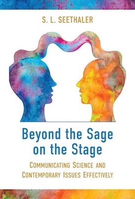

Communication
psychology_altAs we have seen with the pressing issues of our time, such as during the COVID-19 pandemic, communication can go terribly wrong. It can leave people with misconceptions about concepts or evidence and the process through which evidence was obtained. It can disempower people by confusing them and making them more reliant on reasoning shortcuts unsuited to the problem at hand. It can trigger any of several kinds of backfires.
Becoming an effective communicator in any setting requires a combination of knowledge, skills and ways of thinking. Drawing on an extensive research base that cuts across traditional disciplinary silos, Beyond the Sage on the Stage: Communicating Science and Contemporary Issues Effectively delivers practical evidence-based communication strategies and debunks often-repeated communication myths.
The book provides practical communication lessons for researchers, students, educators, medical professionals, journalists, policymakers, changemakers and anyone who wants to have more productive conversations about science, technology, health, the environment and the complex issues of our times.
Topics explored in Beyond the Sage on the Stage
- Detecting hidden jargon and options for handling it.
- Design principles and aesthetics for visuals and multimedia.
- Metaphorical reasoning and astute use of comparisons.
- Storytelling and logic stories that support knowledge integration.
- Conveying the humanity inherent in your work
- Specifying uncertainty meaningfully and accessibly.
- Establishing the context and data to support reasoning.
- Addressing myths and misconceptions without backfires.
- Bridging ideological divides and building trust.
- Breath and body techniques that underpin empathetic connection.
150-word overview
Much communication advice is superficial and the vast research base that should inform communication best practices is ironically impenetrable. Written by an author with a unique cross-disciplinary perspective, Beyond the Sage on the Stage: Communicating Science and Contemporary Issues Effectively translates findings from scholarship across fields into clear lessons for practice accompanied by meaningful examples. It empowers the reader with readily applicable communication strategies.
Organized into a user-friendly guide, the book will support you to develop the knowledge, the skills and the habits of mind to achieve your communication goals, wherever you are on your professional journey. The book is constructed with a clear progression of logic based on a proven educational framework and provides guidance for communication about both uncontroversial and controversial topics. By demonstrating how commonly dispensed communication advice is often counterproductive, it is your innovative toolkit for being understood and for fostering, trust and genuine connection.
What sets it apart?
Beyond the Sage on the Stage is a timely contribution that will appeal to a broad audience. It is organized around principles, instead of being partitioned (as is common for communication guides) by communication format, because principles apply even when formats change. It draws on scholarship across disciplines in the sciences, social sciences and humanities to build a foundation for more effective communication.
Written by an author trained in the life sciences, physical sciences and social sciences who has extensive experience in science education and communication, it provides a fresh perspective, strong scholarly foundation, accessibly written prose and carefully organized structure. It has the potential to change how science and health communication is taught and practiced, leading to improvements in the teaching and learning of science and advancing crucial individual and societal conversations.
- Informed by an extensive evidence base. It draws from a cross-disciplinary body of research (with hundreds of references to peer-reviewed papers) that is not typically used to inform communication teaching and practice.
- Conceptualized as a professional journey. It adapts a powerful educational framework to teach communication knowledge, skills and habits of mind along a meaningful learning trajectory. Self-contained chapters, logical parsing into titled sections, explicit recommendations and purposeful synthesis graphics make it a go-to resource to support one’s evolving communication goals.
- Applies to communication about complex issues in challenging times. It offers guiding principles and practical strategies to not only be understood when you are presenting complex information, but also to get “beyond the sage on the stage,” build trust and reach common ground through dialogue.
Pedagogical Features
Beyond the Sage on the Stage is also an ideal course text that makes the how and why of effective communication readily accessible to students. Rich in substance, it is a resource that they will return to again and again throughout their professional careers.
- Readable and relatable. Intellectually rigorous content is presented in an accessible conversational tone with humor and real-world examples.
- Logical progression. The structure of the book is informed by a proven educational framework (Bloom’s Taxonomy), which establishes a natural hierarchy for building the communication toolkit and establishes a pedagogical foundation that is sorely lacking in other communication guides.
- Metacognitive supports. Explicit learning outcomes for each chapter, synthesis graphics throughout, and a knowledge integration final chapter with topic-by-topic checklists and thought-provoking exercises support reflection, assimilation and transfer.
- Maximal flexibility. For adoption in courses with different emphases, and consistent with the goal of creating a go-to resource amenable to being revisited, each chapter is written to be self-contained and meticulously organized with guideposts that highlight each lesson.
- Scholarly grounding. The content of the book is based on evidence from across disciplines in the sciences, social sciences and humanities. The references are carefully documented to make further exploration easy.
Beyond the Sage on the Stage dispenses with the long-winded explanations (that waste far too much space in other communication guides) about why effective communication is important, because anyone picking up a book on communication already believes in the importance of communication. This permits a deeper exploration of other topics that are essential for inclusive, effective trust-building communication about substantive issues in challenging times.
For instance, one chapter presents 15 research-based strategies for reducing communication backfires. Another chapter discusses non-verbal communication in depth and offers breath and body techniques for combatting stage fright. To promote nuanced reflection, ethical considerations are threaded throughout the book as they pertain to the topics in each chapter.
Even when presenting more familiar topics, such as handling jargon, designing visuals, selecting metaphors and crafting stories, Beyond the Sage on the Stage digs into the evidence and debunks commonly promulgated communication myths.